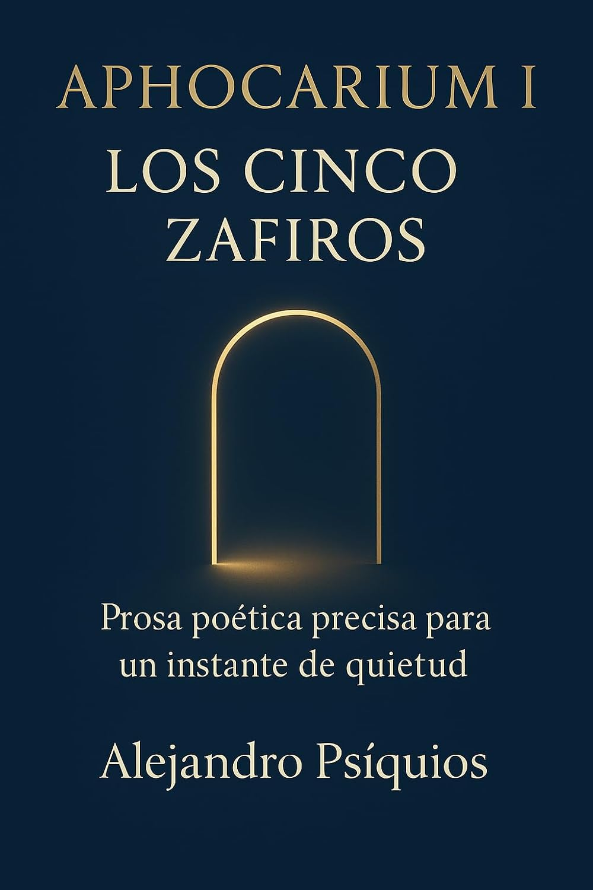

Prosa poética · Microtextos
Aphocarium I – Los cinco zafiros
Prosa poética precisa para un instante de quietud.

Un libro para la quietud
Hay libros que se hojean. Y hay libros que se guardan como un objeto precioso.
Aphocarium I – Los cinco zafiros pertenece a esta segunda categoría.
Este volumen reúne diez microtextos poéticos escritos en prosa sobria y precisa, concebidos para lectores que buscan un instante de quietud real, lejos de las fórmulas previsibles de la autoayuda.
Cada texto es una piedra fina: breve, densa, pulida.
No explica; abre un espacio. No dirige; acalla. Deja que la claridad aparezca por sí misma.
Símbolos y contemplación
Dentro encontrarás símbolos como el oro, los zafiros, el vino, los emblemas y las arcas selladas.
Estos elementos funcionan como puertas hacia un refugio interior.
No ofrecen respuestas. Ofrecen una quietud en la que las respuestas pueden escucharse.
Qué encontrarás en Aphocarium I
- Diez microtextos de prosa poética.
- Una escritura sobria, precisa y contenida.
- Lecturas breves que buscan dejar una resonancia más allá del momento de lectura.
- Símbolos y alegorías que abren diferentes interpretaciones.
- Una experiencia de lectura pausada y contemplativa.
Para quién es este libro
Aphocarium I – Los cinco zafiros está dirigido a lectores que buscan:
- calma sin artificios emocionales;
- belleza precisa, sin exceso ni dramatismo;
- lecturas breves que continúan resonando después de cerrar el libro;
- una espiritualidad sugerida, sin tono terapéutico ni promesas de transformación.
Si lo que buscas no es contenido, sino un lugar donde respirar, este es el umbral.
El resto ocurre cuando entras.
Aphocarium I – Los cinco zafiros
Descubre los diez microtextos de prosa poética.
Ver el libro en Amazon